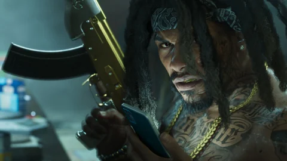

Gangues e facções, GTA VI
As gangues e facções de GTA VI
Motoqueiros de Ambrosia, gangue de Southside, assaltantes de Raul, traficantes das Keys e polícia: os grupos que a Rockstar mostrou e o que falta confirmar.
Cada ficha diz de onde vem o nome do grupo: um texto da Rockstar, um emblema ou uma placa visíveis na imagem, ou uma leitura dos jogadores. Mostrar um grupo não diz se ele será aliado ou alvo: o papel dele ainda está por descobrir. Entender os status.


As 6 fichas

Final Chapter MC
A refinaria dá o trabalho, o clube fornece o resto.
O motoclube de Ambrosia, fundado em 1982 segundo seus emblemas pretos e dourados: a gangue de motoqueiros local de que fala a apresentação oficial da região.
Ver a ficha
A gangue PTT Youngin$
Um esconderijo para saquear e, depois, a fuga.
A gangue de Southside cujo esconderijo a edição Ultimate propõe saquear. A Rockstar a descreve como uma das mais barulhentas e mais em evidência de Vice City.
Ver a ficha
San4San
Um nome lido pelos jogadores, nunca apresentado pela Rockstar.
Uma gangue de Vice City identificada pelos jogadores: seu nome estaria escrito em uma corrente e em um mural dos trailers. A Rockstar nunca a apresentou em um texto.
Ver a ficha
A equipe de Raul Bautista
Acompanhar o ritmo, ou sair.
Os assaltantes que Raul Bautista recruta, sempre atrás de talentos dispostos a correr os maiores riscos. No Extended Look, Jason e Lucia entram nela depois de uma fuga bem-sucedida.
Ver a ficha
A rede de Brian Heder
O contrabando à moda antiga, a partir das Keys.
Os traficantes das Keys para quem Jason trabalha, em torno de Brian Heder, contrabandista da era de ouro que faz a mercadoria passar pelo estaleiro dele.
Ver a ficha
As forças de segurança de Leonida
Sem testemunha nem alarme, a polícia não vem atrás de você.
Polícia de Vice City, xerifes de condado, polícia marítima e Guarda Costeira: o que os trailers e as capturas mostram de quem persegue Jason e Lucia.
Ver a fichaFontes oficiais
O que a Rockstar mostrou
Nenhum texto da Rockstar lista as gangues. Mesmo assim, emblemas, uma placa, um texto de edição e uma entrevista desenham o panorama.
- Visto na mídia
Trailer 1
Uma viatura do Vice-Dale Police Department e a delegacia do xerife do condado de Leonard: os primeiros nomes legíveis de forças de segurança.

Imagem oficial da Rockstar Games - Oficial
Regiões e personagens
Para a Rockstar, em Ambrosia, a refinaria dá os empregos e a gangue de motoqueiros local cuida do resto; na captura, os coletes trazem “Final Chapter”. Raul recruta assaltantes, Jason trabalha para os traficantes das Keys.

Imagem oficial da Rockstar Games - Visto na mídia
Trailer 2
Uma van blindada da polícia fica de frente para Lucia por volta de 1:59; por volta de 1:25, o estaleiro de Brian carrega à noite.

Imagem oficial da Rockstar Games - Oficial
Edição Ultimate
Primeira gangue nomeada em um texto oficial: os PTT Youngin$ de Southside, cujo esconderijo é saqueado antes da fuga. Outra captura mostra uma lancha com a inscrição Vice City Police.

Imagem oficial da Rockstar Games - Visto na mídia
Extended Look
Uma entrega para Boobie em Venture Apartments termina em batida policial; Raul coloca Jason e Lucia na sua equipe; Brian passa um trabalho a eles à mesa.

Imagem oficial da Rockstar Games - Visto na mídia
Famitsu
Rob Nelson (Rockstar North): você se infiltra em esconderijos de gangues para roubar dinheiro ou drogas, que o mapa quantifica de antemão; as drogas são revendidas a um receptador. Sem testemunha nem alarme, não há nível de procurado.

Imagem oficial da Rockstar Games
Aqui, um nome “lido na imagem” vem de um emblema, de uma inscrição ou de uma placa: isso não quer dizer que a Rockstar o tenha apresentado.
Observações dos jogadores
O que a comunidade identificou
As wikis vão além das imagens. Veja o que elas sugerem.
Um nome lido por uma wiki continua sendo uma identificação da comunidade enquanto a Rockstar não o escrever.
Perguntas em aberto
O que ainda falta confirmar
As gangues são mostradas, não explicadas.
Quantas gangues?
Nenhuma lista: Rob Nelson fala de esconderijos de gangues, sem citar nomes.
Entrar em uma gangue, tomar um território?
Nada anunciado. Só o saque dos esconderijos foi descrito.
O butim de um esconderijo
Dinheiro e drogas, com valores indicados no mapa; nenhum montante publicado.
O esconderijo dos PTT Youngin$ sem a edição Ultimate
Incluído na edição; nada diz que ele exista sem ela.
As outras polícias
Dá para ler Vice City, Vice-Dale e duas delegacias de xerife; o resto não foi publicado.
Ferramentas do site
O que muda para você
Para preparar desde já com estas seis fichas.
Perguntas
Perguntas frequentes
As perguntas que as pessoas digitam num buscador, com respostas curtas e datadas.
Quais gangues estão confirmadas em GTA VI?
Dá para atacar os esconderijos de gangues?
Quem são os motoqueiros de Ambrosia?
Como funciona o nível de procurado?
Dá para entrar na equipe de Raul?
16 fontes consultadas
Fontes e status
Cada afirmação desta página tem um status e vem de uma página consultada na data indicada. O texto da edição Ultimate e as declarações de Rob Nelson foram relidos em 3 de outubro de 2026 nas fontes que os reproduzem.
Oficial
Página, texto ou vídeo publicados pela Rockstar nos próprios canais (site de GTA VI, Newswire, trailers, Extended Look), ou pela Take-Two, Sony ou Microsoft, escritos como eles disseram, com a data.
Visto na mídia
O que uma imagem ou sequência oficial mostra sem um texto da Rockstar que diga isso (um plano de trailer, uma captura, um momento do Extended Look, com o minuto exato quando é conhecido), ou o que um veículo de imprensa identificado relata, incluindo declarações de um responsável da Rockstar, com o veículo e a data.
Identificação da comunidade
Comparação feita por jogadores, por uma wiki ou por um site de fãs (lugar real, ator, condado). Citada como tal, nunca apresentada como confirmada.
A confirmar
Pergunta sem resposta publicada: preço, compra, acesso, papel na história. Anotamos a pergunta para não adivinhar a resposta.
Páginas consultadas
- OficialSite oficial de Grand Theft Auto VI (páginas “Only in Leonida”, edições, pré-vendas)
Seis regiões e oito personagens apresentados em 6 de maio de 2025; textos das edições de 24 de junho de 2026. Relido em 27/09/2026 nas páginas que o citam (rockstargames.com inacessível do nosso estúdio naquele dia).
- OficialRockstar Games: capturas oficiais de GTA VI
Capturas das regiões e dos personagens (maio de 2025) e das edições (junho de 2026); os estabelecimentos nomeados nos títulos das capturas.
- OficialRockstar Games: vídeos oficiais de GTA VI (Trailer 1, Trailer 2, An Extended Look)
Trailer 1 de 4 de dezembro de 2023, Trailer 2 de 6 de maio de 2025, Extended Look de 27 de agosto de 2026: os quadros do site vêm deles.
- OficialRockstar Newswire: Grand Theft Auto VI, An Extended Look
Apresentação capturada no jogo no PlayStation 5, primeiro na Netflix e depois no YouTube.
- OficialMicrosoft Store: Grand Theft Auto VI, Ultimate Edition (ficha oficial da edição)
“PTT YOUNGIN$ COMPOUND”: saquear este esconderijo de gangue e fugir sem problemas com itens especiais e um contrabando exclusivo.
- Identificação da comunidadeGTABase: PTT Youngin$
Retoma o texto da Rockstar: saquear o esconderijo de uma das gangues mais barulhentas de Southside, em Vice City, e depois fugir.
- Visto na mídiaFamitsu: entrevista com Rob Nelson (Rockstar North) após a demonstração
Esconderijos que mudam com os capítulos, três vagas de veículo no início, garagens para comprar, armário na Ammu-Nation, Pay ’n’ Spray e receptadores, assaltos, salões e lojas, corte de cabelo em casa.
- Identificação da comunidadeGTAVice.net: tradução em inglês da entrevista da Famitsu
Mesma entrevista, citada em inglês; as falas de Rob Nelson usadas aqui vêm dela.
- Visto na mídiaSVG: GTA 6’s wanted system explained, everything Rockstar has confirmed
Rob Nelson (IGN): um crime precisa ter uma testemunha ou disparar um alarme; óculos e penteado não bastam, a polícia conhece as suas roupas.
- Identificação da comunidadeWikipedia: Grand Theft Auto VI, An Extended Look
Resumo das cenas: entrega para Boobie interrompida pela polícia, Raul colocando a dupla na sua equipe, Brian passando um trabalho no jantar.
- Identificação da comunidadeGTA Wiki: Grand Theft Auto VI, An Extended Look
Transmissão de 27 de agosto de 2026 (Netflix e depois YouTube), 26 min 48 s, quatro missões: Venture Apartments, Effluvia, perseguição com Raul, Megamundo.
- Identificação da comunidadeGTA Wiki: Final Chapter MC
Nome tirado de uma captura oficial de Ambrosia; fundado em 1982 segundo os emblemas; comparado aos Bandidos e aos Warlocks.
- Identificação da comunidadeGTA Wiki: San4San
Corrente no encontro de carros do Trailer 1 (1:08), mural de La Perle no Trailer 2 (0:46); nome conhecido primeiro pelos vazamentos de 2022; gangue ligada a Venture Apartments.
- Identificação da comunidadeGTABase: GTA 6 gangs & factions
Final Chapter MC, PTT Youngin$ e San4San apresentados como confirmados; doze serviços de polícia catalogados; gangues de GTA Vice City classificadas como especulação.
- Identificação da comunidadeGTA 6 Explained: gangs and factions, confirmed groups vs rumors
A equipe de Raul e a rede de Brian estão confirmadas, mas sem nome; dar a elas um nome inventado por fãs seria impreciso.
- Identificação da comunidadeGTA Wiki: Vice-Dale, Leonard, Mariana, Kelly e Ambrosia County (uma página por condado)
Placas e carros do xerife dos trailers em que dá para ler os nomes dos condados; condados reais sugeridos como equivalentes.
O que não fazemos. Nenhum dado vindo dos vazamentos de 2022 ou de 2026, nenhum preço inventado, nenhuma comparação apresentada como confirmada. Os status são explicados no Tutorial.
Continue explorando


A calculadora
Saquear um esconderijo de gangue rende mais do que uma missão?
Nenhum butim foi publicado. Escreva quanto um golpe renderia, a duração e a sua parte: a calculadora compara as suas atividades por hora de jogo.
E depois?
O resto será escrito em 19 de novembro de 2026.
Cada ficha será completada com o jogo: o que se encontra lá, o que se faz lá, quanto rende. Nada inventado até lá.